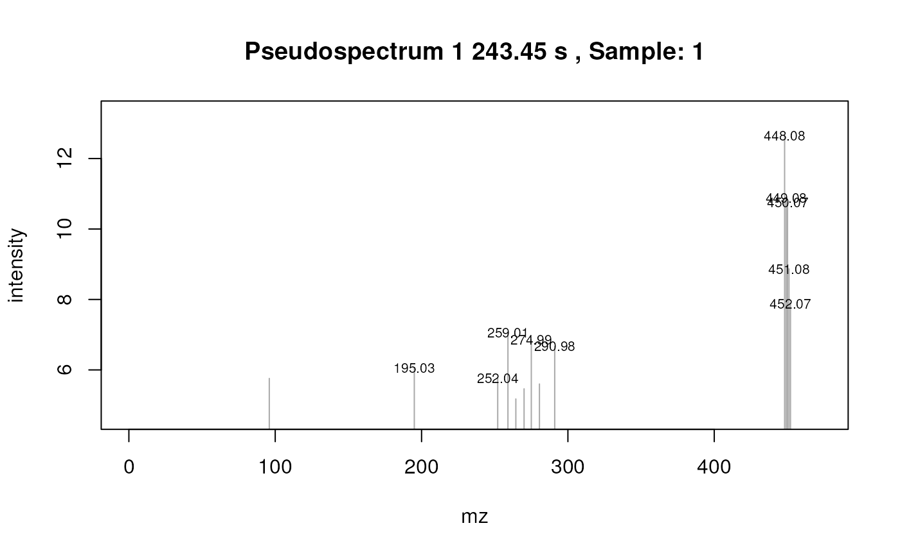
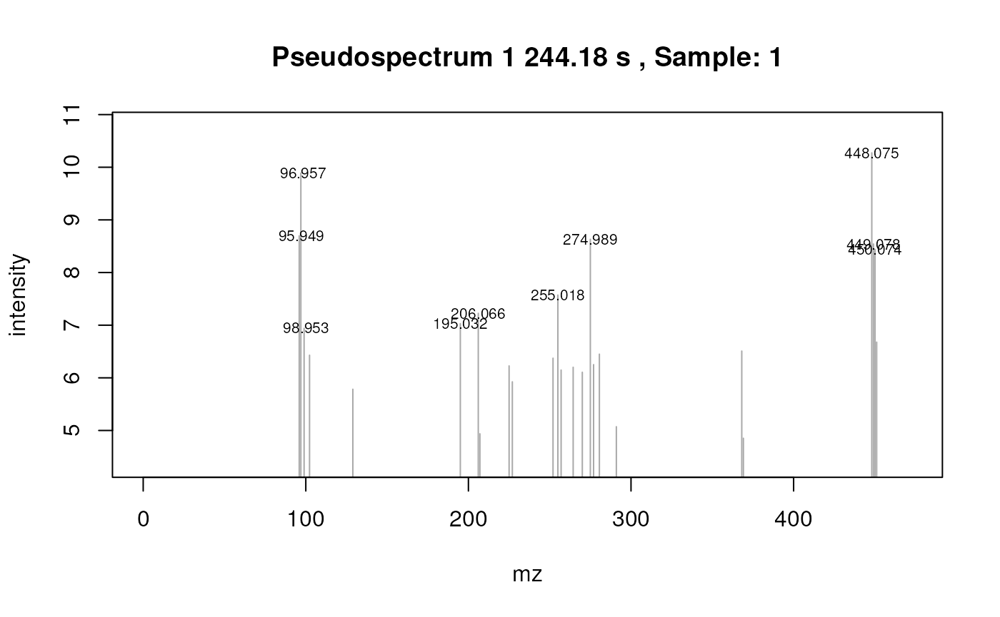

RMassBankXCMS.RmdAs the RMassBank-workflow is described in the other manual, this document mainly explains how to utilize the XCMS-, MassBank-, and peaklist-readMethods for Step 1 of the workflow.
RMassBank handles high-resolution LC/MS spectra in mzML or mzdata format in centroid1 or in profile mode.
Data in the examples was acquired using a QTOF instrument.
In the standard workflow, the file names are used to identify a
compound: file names must be in the format
xxxxxxxx_1234_xxx.mzXML, where the xxx parts denote
anything and the 1234 part denotes the compound ID in the compound list
(see below). Advanced and alternative uses can be implemented; consult
the implementation of msmsRead, msms_workflow
and findMsMsHRperX.direct for more information.
The data used in the following example is available as a package RMassBankData, so both libraries have to be installed to run this vignette.
library(RMassBank)## Loading required package: Rcpp
library(RMassBankData)In the first part of the workflow, spectra are extracted from the files and processed. In the following example, we will process the Glucolesquerellin spectra from the provided files.
For the workflow to work correctly, we use the default settings, and modify then to match the data acquisition method. The settings have to contain the same parameters as the mzR-method would for the workflow.
RmbDefaultSettings()
rmbo <- getOption("RMassBank")
rmbo$spectraList <- list(
list(mode="CID", ces="10eV", ce="10eV", res=12000),
list(mode="CID", ces="20eV", ce="20eV", res=12000)
)
rmbo$multiplicityFilter <- 1
rmbo$annotations$instrument <- "Bruker micrOTOFq"
rmbo$annotations$instrument_type <- "LC-ESI-QTOF"
rmbo$recalibrator$MS1 <- "recalibrate.identity"
rmbo$recalibrator$MS2 <- "recalibrate.identity"
options("RMassBank" = rmbo)First, a workspace for the msmsWorkflow must be
created:
msmsList <- newMsmsWorkspace()The full paths of the files must be loaded into the container in the
array files:
msmsList@files <- list.files(system.file("spectra.Glucolesquerellin",
package = "RMassBankData"),
"Glucolesquerellin.*mzML", full.names=TRUE)Note the position of the compound IDs in the filenames. Historically,
the “pos” at the end was used to denote the polarity; it is
obsolete now, but the ID must be terminated with an underscore. If you
have multiple files for one compound, you have to give them the same ID,
but thanks to the polarity at the end being obsolete, you can just
enumerate them.
Additionally, the compound list must be loaded using
loadList:
loadList(system.file("list/PlantDataset.csv",package="RMassBankData"))Basically, the changes to the workflow using XCMS can be described as follows:
The MS2-Spectra(and optionally the MS1-spectrum) are extracted and
peakpicked using XCMS. You can pass different parameters for the
findPeaks function of XCMS using the findPeaksArgs-argument
to detect actual peaks. Then, CAMERA processes the peak lists and
creates pseudospectra (or compound spectra). The obtained pseudospectra
are stored in the array specs.
Please note that “findPeaksArgs” has to be a list with the list
elements named after the arguments that the method you want to use
contains, as findPeaks is called by do.call. For example,
if you want to use centWave with a peakwidth from 5 to 12 and 25 ppm,
findPeaksArgs would look like this:
If you want to utilize XCMS for Step 1 of the workflow, you have to set the readMethod-parameter to “xcms” and - if you don’t want to use standard values for findPeaks - pass on findPeaksArgs to the workflow.
msmsList <- msmsRead(msmsList, files= msmsList@files,
readMethod = "xcms", mode = "mH", Args = Args, plots = TRUE)## Provided scanrange was adjusted to 1 - 0## MS2 spectra without precursorScan references, using estimation## Detecting mass traces at 25 ppm ... OK
## Detecting chromatographic peaks in 40 regions of interest ... OK: 29 found.
## Provided scanrange was adjusted to 1 - 0
## MS2 spectra without precursorScan references, using estimation
##
## Detecting mass traces at 25 ppm ... OK
## Detecting chromatographic peaks in 32 regions of interest ... OK: 29 found.
msmsList <- msmsWorkflow(msmsList, steps=2:8,
mode="mH", readMethod="xcms")You can of course run the rest of the workflow as usual, by - like here - setting steps to 1:8
To export the records from the XCMS workflow, follow the same procedure as the standard RMassBank workflow, i.e.:
mb <- newMbWorkspace(msmsList)
mb <- resetInfolists(mb)
mb <- loadInfolist(mb,system.file("infolists/PlantDataset.csv",
package = "RMassBankData"))
# Step
mb <- mbWorkflow(mb, steps=1:8)The peaklist-workflow works akin to the normal mzR-workflow with the only difference being, that the supplied data has to be in .csv format and contain 2 columns: “mz” and “int”. You can look at an example file in the RMassBankData-package in spectra.Glucolesquerellin. Please note that the naming of the csv has to be similar to the mzdata-files, with the only difference being the filename extension. The readMethod name for this is “peaklist”
msmsPeaklist <- newMsmsWorkspace()
msmsPeaklist@files <- list.files(system.file("spectra.Glucolesquerellin",
package = "RMassBankData"),
"Glucolesquerellin.*csv", full.names=TRUE)
msmsPeaklist <- msmsWorkflow(msmsPeaklist, steps=1:8,
mode="mH", readMethod="peaklist")The records can then be generated and exported with
mbWorkflow.
## R version 4.3.0 (2023-04-21)
## Platform: x86_64-pc-linux-gnu (64-bit)
## Running under: Ubuntu 22.04.2 LTS
##
## Matrix products: default
## BLAS: /usr/lib/x86_64-linux-gnu/openblas-pthread/libblas.so.3
## LAPACK: /usr/lib/x86_64-linux-gnu/openblas-pthread/libopenblasp-r0.3.20.so; LAPACK version 3.10.0
##
## locale:
## [1] LC_CTYPE=en_US.UTF-8 LC_NUMERIC=C
## [3] LC_TIME=en_US.UTF-8 LC_COLLATE=en_US.UTF-8
## [5] LC_MONETARY=en_US.UTF-8 LC_MESSAGES=en_US.UTF-8
## [7] LC_PAPER=en_US.UTF-8 LC_NAME=en_US.UTF-8
## [9] LC_ADDRESS=en_US.UTF-8 LC_TELEPHONE=en_US.UTF-8
## [11] LC_MEASUREMENT=en_US.UTF-8 LC_IDENTIFICATION=en_US.UTF-8
##
## time zone: UTC
## tzcode source: system (glibc)
##
## attached base packages:
## [1] stats graphics grDevices utils datasets methods base
##
## other attached packages:
## [1] RMassBankData_1.38.0 RMassBank_3.11.1 Rcpp_1.0.10
## [4] BiocStyle_2.28.0
##
## loaded via a namespace (and not attached):
## [1] RColorBrewer_1.1-3 rstudioapi_0.14
## [3] jsonlite_1.8.4 magrittr_2.0.3
## [5] MALDIquant_1.22.1 rmarkdown_2.21
## [7] fs_1.6.2 zlibbioc_1.46.0
## [9] ragg_1.2.5 vctrs_0.6.2
## [11] multtest_2.56.0 memoise_2.0.1
## [13] RCurl_1.98-1.12 base64enc_0.1-3
## [15] xcms_3.22.0 htmltools_0.5.5
## [17] S4Arrays_1.0.1 itertools_0.1-3
## [19] curl_5.0.0 Formula_1.2-5
## [21] mzID_1.38.0 sass_0.4.5
## [23] KernSmooth_2.23-20 bslib_0.4.2
## [25] htmlwidgets_1.6.2 desc_1.4.2
## [27] plyr_1.8.8 impute_1.74.1
## [29] cachem_1.0.8 igraph_1.4.2
## [31] lifecycle_1.0.3 iterators_1.0.14
## [33] pkgconfig_2.0.3 Matrix_1.5-4
## [35] R6_2.5.1 fastmap_1.1.1
## [37] GenomeInfoDbData_1.2.10 MatrixGenerics_1.12.0
## [39] clue_0.3-64 digest_0.6.31
## [41] pcaMethods_1.92.0 rsvg_2.4.0
## [43] colorspace_2.1-0 S4Vectors_0.38.1
## [45] rprojroot_2.0.3 Hmisc_5.0-1
## [47] textshaping_0.3.6 GenomicRanges_1.52.0
## [49] fansi_1.0.4 httr_1.4.5
## [51] compiler_4.3.0 doParallel_1.0.17
## [53] backports_1.4.1 htmlTable_2.4.1
## [55] BiocParallel_1.34.0 DBI_1.1.3
## [57] logger_0.2.2 highr_0.10
## [59] fingerprint_3.5.7 gplots_3.1.3
## [61] R.utils_2.12.2 MASS_7.3-59
## [63] ChemmineR_3.52.0 DelayedArray_0.26.1
## [65] rjson_0.2.21 caTools_1.18.2
## [67] gtools_3.9.4 mzR_2.35.1
## [69] tools_4.3.0 foreign_0.8-84
## [71] nnet_7.3-18 R.oo_1.25.0
## [73] webchem_1.2.0 glue_1.6.2
## [75] grid_4.3.0 checkmate_2.2.0
## [77] cluster_2.1.4 readJDX_0.6.1
## [79] generics_0.1.3 gtable_0.3.3
## [81] rcdk_3.7.0 R.methodsS3_1.8.2
## [83] preprocessCore_1.62.1 data.table_1.14.8
## [85] xml2_1.3.4 utf8_1.2.3
## [87] XVector_0.40.0 BiocGenerics_0.46.0
## [89] RANN_2.6.1 foreach_1.5.2
## [91] pillar_1.9.0 stringr_1.5.0
## [93] limma_3.56.0 robustbase_0.95-1
## [95] rJava_1.0-6 splines_4.3.0
## [97] dplyr_1.1.2 CAMERA_1.56.0
## [99] lattice_0.21-8 survival_3.5-5
## [101] RBGL_1.76.0 tidyselect_1.2.0
## [103] knitr_1.42 gridExtra_2.3
## [105] bookdown_0.33 IRanges_2.34.0
## [107] ProtGenerics_1.32.0 SummarizedExperiment_1.30.1
## [109] stats4_4.3.0 xfun_0.39
## [111] Biobase_2.60.0 MSnbase_2.26.0
## [113] matrixStats_0.63.0 DEoptimR_1.0-13
## [115] DT_0.27 stringi_1.7.12
## [117] yaml_2.3.7 evaluate_0.20
## [119] codetools_0.2-19 data.tree_1.0.0
## [121] rcdklibs_2.8 MsCoreUtils_1.12.0
## [123] tibble_3.2.1 graph_1.78.0
## [125] BiocManager_1.30.20 cli_3.6.1
## [127] affyio_1.70.0 rpart_4.1.19
## [129] systemfonts_1.0.4 munsell_0.5.0
## [131] jquerylib_0.1.4 GenomeInfoDb_1.36.0
## [133] MassSpecWavelet_1.66.0 png_0.1-8
## [135] XML_3.99-0.14 parallel_4.3.0
## [137] pkgdown_2.0.7.9000 ggplot2_3.4.2
## [139] assertthat_0.2.1 bitops_1.0-7
## [141] MsFeatures_1.8.0 scales_1.2.1
## [143] affy_1.78.0 ncdf4_1.21
## [145] purrr_1.0.1 crayon_1.5.2
## [147] rlang_1.1.1 vsn_3.68.0
## [149] rvest_1.0.3The term “centroid” here refers to any kind of data which are not in profile mode, i.e. don’t have continuous m/z data. It does not refer to the (mathematical) centroid peak, i.e. the area-weighted mass peak.↩︎